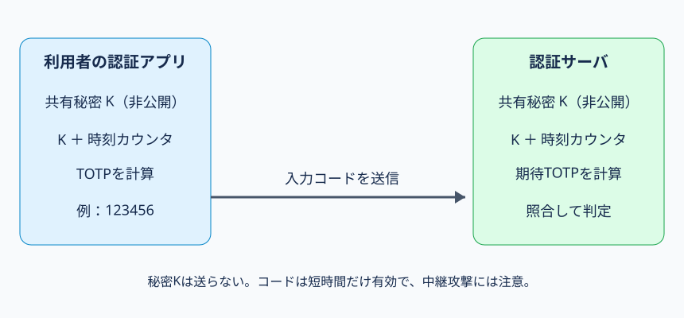

第46講｜ワンタイムパスワード
到達目標・根拠・学習優先度
到達目標：ワンタイムパスワード（OTP）が固定パスワードの再利用リスクを減らす理由、TOTP・HOTP・SMS・S/Keyの違い、共有秘密の登録と検証、攻撃と対策、ログの解釈を科目A/Bで説明できる。
参考書：『徹底攻略 情報処理安全確保支援士教科書 令和7年度版』第4章4-2「認証」、印刷p.287（認証デバイスの時刻同期OTP）、p.290–291（パスワード認証、OTP、セキュリティトークン、S/Key）。実際にPDFの該当箇所を確認。以下のHOTP/TOTPの内部処理、SMSの脅威、ログ、科目B答案例は講師独自の補足。参考書の「ネットワーク上を流れるパスワードを毎回変える」という説明はOTPの狙いを示すが、OTPがすべての攻撃を防ぐという意味ではない。
優先度：A必須75%、B理解補助20%、C発展5%。
1. 固定パスワードの何が問題なのか【A】
Aさんが毎回同じパスワード River-Example-2026 を送るシステムを考える。攻撃者が一度その値を盗めば、変更されない限り再び入力してログインできる可能性がある。そこで、認証のたび、または短い時間ごとに値が変わるコードを使うのがOTP（One-Time Password）である。
OTPが狙うのは、盗まれた古い認証コードの再使用（リプレイ）を難しくすること。ただし「一度だけ」と名付けられていても、実装によっては有効時間内の同じコードを複数回受理してしまう。期限と使用済み管理の両方が重要である。
OTPを固定パスワードに追加する場合は二要素認証の一部となり得るが、OTPだけで必ず二要素になるわけではない。OTPを生成・受信する手段と本人確認の設計を確認する。
2. TOTPの登場人物と初期登録【A】
TOTP（Time-based One-Time Password）は時刻同期型OTPである。Aさんの認証アプリと認証サーバSが、同じ秘密値Kと現在時刻を使ってコードを計算する。
登録時：(1) Sが暗号学的に安全な乱数から利用者専用の秘密Kを生成する。(2) SはKを安全に保存し、Aの認証アプリへQRコードなどで安全な登録経路を通じて渡す。(3) アプリはKを保存する。(4) Aが生成されたコードを入力し、Sが一致を確認して登録を確定する。QRコードは単なる表示画像ではなく、秘密Kを含むことがあるため、第三者に見せたり公開したりしてはいけない。
ここで秘密なのはK。利用者ID、現在時刻、コード生成方式などは原則秘密にしない。サーバは利用者のスマートフォンに問い合わせずとも、同じKと時刻から期待コードを自分で計算できる。これがオフラインでも認証アプリにコードを表示できる理由である。

図の読み方：左と右が登録済みの同じ秘密Kを保管する。双方が同じ時間区間を用いてコードを計算する。中央の矢印で送るのは表示された短いコードであり、秘密Kではない。
3. TOTPのログイン処理と時間ずれ【A】
通常のパスワード＋TOTPでは、(1) AがIDとパスワードを正規サイトへ送る。(2) Sがパスワードを検証する。(3) Aが認証アプリのTOTPを入力する。(4) Sが保存済みKと時刻から期待コードを生成し照合する。(5) 必要な他の条件も満たせばログインを許可し、セッションを発行する。
たとえば30秒ごとに時刻区間を切り替える設計なら、09:00:00–09:00:29と09:00:30–09:00:59では通常異なるコードになる。これは説明用の例であり、実装によって間隔や桁数は異なる。
なぜ時計を合わせる必要があるか：端末が09:00の区間だと思っているのにサーバが09:01の区間だと、同じKでも入力が一致しない。時刻ずれを考慮して前後の時間区間のコードも受け付ける設計がある。ただし許容範囲を広げると攻撃者がコードを使える時間も長くなる。正しい時刻同期、短い許容窓、使用済みコードの再利用防止、失敗回数制限を組み合わせる。
重要な区別：TOTPはパスワードを暗号化して送る仕組みではない。共有秘密Kから短時間だけ有効な別のコードを生成する仕組みである。通信の盗聴・改ざんには引き続きTLSが必要。
4. HOTPとの違い【A/B】
HOTP（HMAC-based One-Time Password）は、秘密Kと増加するカウンタCからOTPを生成する方式。HMACとは、秘密鍵を使ってメッセージの完全性・認証に用いる値を作る仕組みである。
TOTPは時間を入力にするため、基本的に時間区間が進むとコードが変わる。HOTPはカウンタを入力にするため、ボタン操作などでカウンタが進むとコードが変わる。両者は関連するが同じものではない。
| 比較 | TOTP | HOTP |
|---|---|---|
| 変化の基準 | 時刻の区間 | カウンタ値 |
| 共有する秘密 | K | K |
| 同期上の課題 | 端末とサーバの時刻ずれ | カウンタのずれ |
| 主な対応 | 時刻同期・許容窓 | カウンタの同期・再同期 |
なぜカウンタがずれるか：利用者が端末でコードを何回も生成したのにサーバへ送らなければ、端末側だけCが進むことがある。サーバは一定範囲を探索して同期し直す場合があるが、広すぎる探索窓は安全性に影響する。
5. SMSコードとS/Key【A/B】
SMSコード：サーバが生成した短いコードを登録電話番号へ送信し、入力された値と照合する。TOTPと違い、利用者アプリとサーバが同じKからコードを計算する方式とは限らない。SIMスワップ（電話番号を攻撃者が支配する手続）、SMS転送、盗み見、偽サイトへの入力に注意する。電話番号の変更・再登録時の本人確認も重要。
S/Key：参考書p.291で紹介される、種（Seed）とハッシュ関数を使ったハッシュ連鎖型OTP。たとえば種にハッシュ関数を繰り返し適用して系列を作り、認証のたびに順序に沿った値を使用する。サーバはハッシュ演算で次の値を検証できる。TOTPのように時刻を基準にする方式ではない。科目AではS/Key＝ハッシュ連鎖、TOTP＝時刻同期、HOTP＝カウンタ同期を区別できればよい。
6. OTPを狙う攻撃と防御策【A】
①リプレイ攻撃：攻撃者が過去に観測したOTPを再送する。コードを期限切れ・使用済みとして拒否すれば防ぎやすい。しかし同じ時間窓のコードを何度でも許可する実装では再利用の余地がある。
②リアルタイム・フィッシング中継：攻撃者Eが偽サイトを用意し、Aが入力したパスワードと現在有効なOTPを即座に正規サイトへ転送する。正規サイトには「有効な値」が届くため、OTPの有効期限が短いだけでは防げない。FIDO2/WebAuthnなど、認証応答を正規サイトのオリジンに結び付ける方式が対策候補となる。
③OTPの総当たり：短い数字コードには候補数の限界がある。たとえば6桁なら理論上100万通りだが、試行回数制限なしに短時間で大量送信できる設計は危険。アカウント・送信元・時間帯を考慮したレート制御、監視、短い有効期限を組み合わせる。
④共有秘密Kの漏えい：攻撃者が登録用QRコードや認証アプリの秘密Kを取得すると、自分の端末で将来のTOTPを生成できる可能性がある。コードの短命性では防げない。Kの保護、認証器の再登録・無効化、利用者への通知が必要。
⑤復旧手続の悪用：OTP認証器を紛失したと偽ってヘルプデスクに解除させる。登録・変更・解除・復旧時の本人確認、承認、記録、通知を強化する。
7. ログを使って攻撃と障害を区別する【A】
講師独自の架空ログ：
09:00:01 user=a01 password=OK otp=FAIL reason=TIME_WINDOW
09:00:31 user=a01 password=OK otp=SUCCESS src=203.0.113.8
09:00:34 user=a01 password=OK otp=FAIL reason=REUSED_CODE
09:01:02 user=a01 factor=RESET actor=helpdesk確実な事実：最初のOTPは時刻窓の条件で拒否され、次は成功、さらに再利用コードが拒否され、その後ヘルプデスクによる認証器リセットが記録されている。断定できないこと：最初の失敗が本当に端末時計のずれによるか、同一人物が操作したか、リセットが本人の依頼だったか。調査：時刻同期状況、送信元・端末、成功セッションの操作、リセット受付と本人確認・承認履歴。対策：時刻同期の維持、再利用拒否、試行制限、復旧時の本人確認・監査。
8. 科目Aと科目Bの答案【A】
科目A：①TOTPとHOTPの変化基準、②S/Keyのハッシュ連鎖、③SMSと認証アプリの生成主体、④OTPがリプレイを抑えてもリアルタイム中継を防がない理由、⑤登録秘密・再利用・復旧手続を区別する。
科目Bの例：「TOTPを導入したが、利用者が偽サイトに入力したコードを攻撃者がすぐ正規サイトに送信し、不正ログインされた。原因と対策を述べよ。」
答案を組み立てる順序：(1) 利用者は偽サイトに有効なコードを入力した。(2) 攻撃者は期限内に正規サイトへ中継した。(3) TOTPの値は正規サイトのドメインに暗号学的に結び付いていない。(4) 期限短縮だけでは十分でない。(5) 正規サイトへの結び付きを持つFIDO2/WebAuthnを導入する。
答案例：「TOTPは有効時間内のコードを偽サイトから正規サイトへ中継でき、コードが正規サイトのオリジンに結び付いていないため。FIDO2/WebAuthnなどのフィッシング耐性のある認証方式へ変更する。」
9. 重要事項と発展【A/B/C】
A必須：TOTPは共有秘密K＋時刻、HOTPはK＋カウンタ、SMSはサーバから送信するコード、S/Keyはハッシュ連鎖。OTPの狙いは古いコードの再使用防止。リアルタイム中継、秘密Kの漏えい、解除・復旧の弱点には別の対策が必要。
B理解補助：時刻許容窓、使用済みコード管理、HOTPカウンタ同期、OTPの試行回数制限。
C任意：RFC 4226/6238の内部演算・動的切出し処理、具体的なカウンタ探索幅やTOTPの時間間隔の調整。